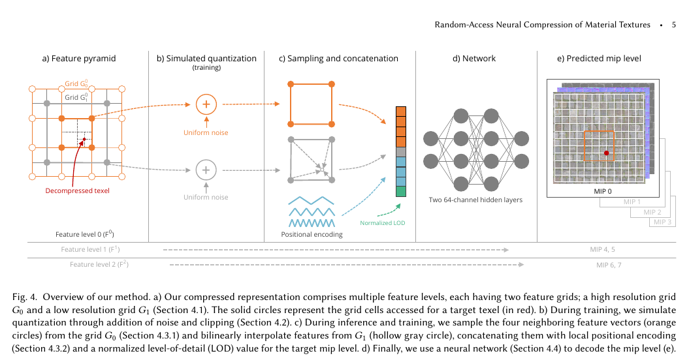
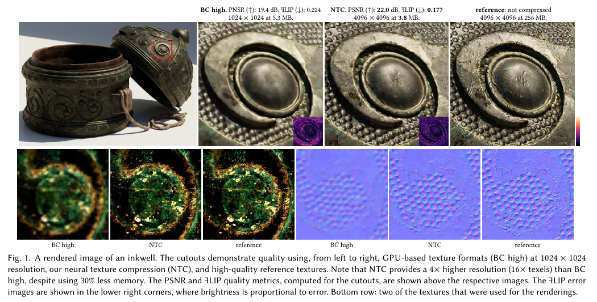
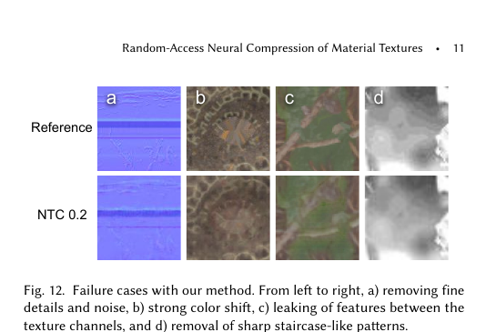

PAPER NOTE · NVIDIA · SIGGRAPH 2023
NTC：把一套 PBR 纹理压成可查询的小函数
NTC 不是让 AI 凭空生成材质。它在压缩阶段只学习当前这一套材质，把 Albedo、Normal、Roughness 等贴图共同藏进量化特征网格和一个很小的 MLP；运行时给它坐标与 mip 层级，它直接还原该位置的全部通道。
它把“查表”改成“算函数”
普通纹理把每个像素的结果直接存下来；NTC 存一组小网格与网络参数，查询时再算出结果。因此它用更多 GPU 计算，换更少的磁盘、显存与带宽。
他们想解决什么问题？
一块“石头”在渲染器里通常不只是一张彩色图。它还可能有法线、粗糙度、金属度、AO、高度、透明度，以及这些纹理的整套 mip。分辨率和材质数量同时上升后，压力会落在三个地方：安装包、显存，以及采样时从显存搬数据的带宽。
传统 GPU 压缩格式 BCnBCn · Block Compression 1–7一族常见的 GPU 纹理格式。它通常把纹理切成 4 × 4 texel 的固定大小块，每块只保存少量颜色、端点或索引；GPU 知道坐标后可以直接找到那一块并硬件解码。例如：BC5 常用于法线，BC6H / BC7 常用于 HDR 或高质量颜色。 / ASTCASTC · Adaptive Scalable Texture Compression同样是 GPU 可直接采样的分块格式，但每个 128-bit 块可以覆盖 4 × 4、6 × 6、8 × 8 等不同范围。覆盖越大，文件越小，但细节通常也越少。它在移动 GPU 上很常见；“Adaptive”主要指可选择块覆盖范围和质量档位。 能够直接访问任意 block，硬件采样也很快，但通常分别处理各张纹理，难以利用“裂缝在 Albedo、Normal、Roughness 中出现在同一位置”这种相关性。AVIFAVIF · AV1 Image File Format一种面向图片存储和传输的格式，借用了 AV1 视频编码里的帧内预测、变换与熵编码。它常能把照片压得很小，但使用前通常要先由解码器还原成普通像素或 GPU 纹理。关键区别：shader 不能像读取 BCn 那样，仅凭一个纹理坐标直接解出 AVIF 中的某个 texel。、JPEG XLJPEG XL · 新一代通用图片编码支持有损、无损和 HDR 的图片格式，通过预测、变换和熵编码压缩整张图的重复信息。读取时要沿编码结构重建像素，再上传或转换成 GPU 可采样纹理。它可以支持分块或渐进解码，但仍不是 shader 原生的固定地址 block texture。 一类格式压得更紧，却更像一段需要顺序解码的数据，不能让 shader 廉价地只询问一个 texel。
论文因此问：能否同时利用空间、通道和 mip 之间的重复信息，又保留 GPU 纹理所需的随机访问？
尺寸对齐的一套材质纹理及其 mip 层级。
为这一套材质联合优化特征网格和小型 MLP。
(u, v, lod) 进入 decoder，一次得到所有材质通道。
有损压缩；不是通用模型，也不会理解“石头”是什么。
它和几条常见路线的区别
| 路线 | 存什么 | 任意 texel 访问 | 主要取舍 |
|---|---|---|---|
| BCn / ASTC | 固定大小的压缩 block | 强，硬件原生 | 快而稳定；很少跨纹理共享信息 |
| AVIF / JPEG XL | 带熵编码的图像码流 | 弱，通常先解码 | 存储率高；不适合 shader 的随机查询 |
| 通用神经图像压缩 | 共享模型 + 每张图的 latent | 视方法而定 | 可泛化到新图；不一定针对实时材质采样 |
| NTC | 每套材质自己的量化 latent + 小 MLP | 强，一次查询一个 texel | 显存更小；解码需要 GPU 算力 |
NTC 是 per-material overfitting：压缩一块材质时现场训练，最后只保存这块材质的紧凑表示。它不是提前读过大量图片、能回答各种问题的“大模型”。
压缩从哪里来：同一条裂缝不必记三次
Albedo 的暗缝、Normal 的凹陷和 Roughness 的变化通常来自同一个表面结构。如果逐张贴图压缩，每个编码器都要重新描述那条缝；联合压缩则可以先把“这里有一条缝”存进共享 latent，再由 decoder 分别翻译成颜色、法线和粗糙度。
这不是说三个通道必须相同，而是它们在空间位置上常有关联。通道越多、对齐越好，能共享的结构一般越多；如果通道完全错位或彼此无关，NTC 的优势会下降，甚至出现一个通道的特征泄漏到另一个通道。
同一条裂缝，为什么不必记录三次
这是空间相关性的概念演示，不是论文编码器复现。点击任意贴图，会在三张图的同一个坐标取样。
Albedo、Normal、Roughness 的数值变得一样
它们在同一个纹理坐标出现可预测的结构变化
试一下：点击 Albedo 里的裂缝。十字取样点会同步出现在三张贴图上，再看下方三个通道是否同时响应。也可以用方向键移动取样点。
把取样点放到裂缝上，观察三种不同数值是否在同一坐标发生变化。
观察的是“变化发生在哪里”，不是比较 RGB、法线和粗糙度的数值是否相等。这里只解释相关性；论文的实际 BPPC 与质量结果见第 5 节。
具体怎么做：两层特征网格，加一个很小的解码器

- 01
先把所有贴图当成一个张量
论文把整套材质看成
w × h × c。它不需要预先知道哪个通道是颜色或法线，只要求这些通道共享尺寸和空间对齐。 - 02
用特征金字塔记住材质
每一级有两张可训练的 2D 网格：高分辨率
G₀负责细节，低分辨率G₁负责平滑变化。一个 feature level 可以覆盖 2–4 个 mip，所以不用为每层都存完整数据。 - 03
训练时就模拟量化损失
latent 最终必须变成有限 bit。训练阶段向特征加入量化区间内的噪声并 clamp，让 decoder 提前适应“数字被舍入”的误差；结束前再真正量化并微调网络权重。
- 04
一个查询只读附近少量特征
目标 texel 从
G₀取四个相邻 feature，保留给网络学习如何插值；从G₁取一个双线性结果。再加入 8 × 8 周期位置编码和归一化 LOD。 - 05
MLP 一次还原全部通道
论文网络只有两个 hidden layer，每层 64 个通道。输出层不加 activation；一次运行会给出当前 texel 的全部材质通道。
material(u, v, lod) = MLP(G₀ neighbors, bilinear(G₁), position, lod)
亲手查询一个 texel
点击网格或移动坐标。你只会点亮目标附近的 latent，而不是先解压整张图。
点击网格选择位置；方向键可微调 U / V。
- 01 / ADDRESStexel (36, 58), mip 1只定位当前查询
- 02 / FEATURESG₀: 4 cells · G₁: 1 blend读取局部 latent
- 03 / MLP2 × 64 hidden位置 + LOD 一起进入
- 04 / OUTPUTall channels一次产生整组材质值
- Albedo
- rgb(92, 86, 72)
- Normal
- (0.04, 0.11, 0.99)
- Roughness
- 0.63
在 mip 1，查询落在较细的 feature level。四个 G₀ 邻居保留局部细节，G₁ 提供缓慢变化的底色。
“训练”发生在哪里，为什么过滤反而麻烦
压缩阶段：像把材质背下来
这套材质自己就是训练数据。优化器反复随机抽取纹素，让 decoder 的输出接近原纹理，同时更新 feature pyramid 和 MLP。论文使用 Adam、L2 loss 和 250k 次迭代；最后 5% 固定已经量化的 latent，只继续微调权重。
因此压缩比 BCn 慢得多，但它是离线资产处理。论文的 fused CUDA 实现把采样、网络、损失和反传放进一个 kernel，比 PyTorch 原型快约 10 倍。
运行阶段：只前向，不再学习
shader 不做训练，只执行前向解码。它不需要 encoder，也不扫描整张纹理；输入坐标、LOD 和局部 latent，输出材质通道。
代价是：一次普通纹理采样变成若干 feature load 加矩阵运算。这正是 NTC 的硬件假设——现代 GPU 越来越擅长计算，而高分辨率纹理的数据搬运仍然昂贵。
最容易忽略的坑：双线性不是一次解码
硬件纹理单元能便宜地过滤 BCn，但 NTC 的 decoder 给出一个 texel。精确双线性要解码四个点，三线性要解码八个点，成本很快翻倍。论文改用 stochastic filtering：每帧只抖动坐标并取一个样本，再让时间重建把多帧结果融合起来。
单点：最快，但纹理缩放时容易闪烁和锯齿。
它有点像用一个 learned surrogate 替换查表：显存流量下降，但一次“读取”变成计算。和降低 solver iteration 一样，得到的速度或质量要放到整条渲染管线里测，不能只看压缩率。
论文结果：更小，不代表完全免费

| 方法 / 档位 | 平均 BPPC ↓ | PSNR ↑ | 1 − SSIM ↓ | 怎么读 |
|---|---|---|---|---|
| AVIF | 0.20 | 29.49 dB | 0.1138 | 低码率对照 |
| NTC 0.2 | 0.23 | 32.71 dB | 0.0633 | 相近存储下误差更低 |
| AVIF | 0.49 | 33.10 dB | 0.0758 | 中低码率对照 |
| NTC 0.5 | 0.56 | 36.12 dB | 0.0418 | 论文的常用平衡点 |
| BC Medium | 3.12 | 37.38 dB | 0.0340 | GPU 原生格式 |
| NTC 2.25 | 2.51 | 45.30 dB | 0.0134 | 高质量档 |
BPPC 是每像素、每通道平均 bit 数。表中是论文 20 套材质的平均值，不是单张示例图；PSNR 越高越好，1 − SSIM 越低越好。
选择 NTC 档位，观察存储、质量与时间
数值来自论文 4K × 4K × 9 通道的统计表，以及 RTX 4090 全屏材质测试。
极低码率：适合先看整体材质是否可接受，细小高频细节最容易被抹掉。
BC High 在同一运行测试中是 0.49 ms。这里的毫秒数只说明论文特定场景与 RTX 4090 上的相对代价，不能直接当成你的项目帧耗。
今天怎么接：Sample、Load、Feedback 是三种不同交换
论文主要讨论直接随机访问。NVIDIA 现在的 RTXNTC SDK 又把它拆成三种工程路径。它们共享同一压缩资产，却不代表相同的显存和运行成本。
- NTC asset
- shader decoder
- 当前 texel
- material channels
- 显存
- 保留 NTC 紧凑表示
- 帧内成本
- 每次材质采样都执行 decoder
- 适合
- 高端 GPU、显存与带宽紧张的场景
直接在 shader 里按坐标解码。它最接近论文的 random access，也最依赖现代矩阵计算能力；输出是未过滤 texel，通常要配 stochastic filtering。
本文讲的核心方法来自 2023 论文；上面的三种模式来自当前 RTXNTC SDK。SDK 仍处于 Beta，接口和硬件建议可能继续变化。
它比别人强在哪里，又会在哪些地方坏掉
联合利用三类冗余
空间、通道与 mip 一起优化；对多通道 PBR 材质比单独压每张图更有优势。
固定码率与随机访问并存
不使用需要顺序展开的熵码流，shader 可以直接询问任意 texel。
把瓶颈从带宽移向计算
在计算资源充足而显存或 PCIe 搬运受限时，这种交换更有意义。
同一表示可走多条部署路径
当前 SDK 可以直接采样，也可以在加载或 sampler feedback 阶段转成 BCn。

有损且会“串台”。高频细节可能变糊，一个通道的结构可能泄漏到另一个通道；alpha cutout 经阈值放大后尤其容易闪烁。
依赖通道对齐。如果 Normal 与 Albedo 的结构错位，共享 latent 很难同时解释它们。
总是输出全部通道。只需要 opacity 的 shadow pass 也可能承担整组输出的网络成本。
过滤与各向异性采样昂贵。精确过滤需要重复 decoder；随机过滤则依赖时间重建并可能带来 specular flicker。
每种材质有自己的网络。同一 wave / warp 中混入多种材质会产生分支与参数切换问题。
单张 RGB 图不一定划算。通道越少，可利用的跨通道相关性越少；NTC 的目标本来就是整套材质。
放进你的图形学项目，应该先做什么
如果你的项目主要是 Three.js / WebGL，现在不适合直接把 RTXNTC 当成一行依赖装进去：官方 SDK 面向 DX12 / Vulkan 和 RTX GPU。更现实的第一步，是把这篇文章的思想用于资产分析——检查贴图是否对齐、通道是否相关、哪些 pass 真正同时使用全部通道，以及当前瓶颈究竟是显存、带宽还是算力。
如果你在原生渲染器或 Unreal 的 RTX 路径实验，可以先挑一个 4K、通道较多、屏幕覆盖率高的材质做 A/B：同相机轨迹记录 VRAM、frame time、temporal flicker 与材质误差，再决定用 On Sample、On Load 或 Feedback。不要先压整个资产库。
- 01选对样本
至少包含 Albedo、Normal、Roughness、高度等多个对齐通道，并保留未压缩 reference。
- 02先看误差位置
不要只看平均 PSNR；重点检查法线高光、alpha cutout、细裂缝与远距离 mip。
- 03测整条 frame
分别记录显存、上传量、采样/解码耗时、时间重建成本和 GPU 占用。
- 04按 pass 分析通道需求
如果大部分 pass 只读一个通道，一次输出全部通道的优势会被削弱。
NTC 最值得学的不是“纹理也能用 AI”，而是一种图形学系统设计：发现资产中的相关性，把存储表示改成可随机查询的小函数，再用多出来的 ALU 换回显存与带宽。